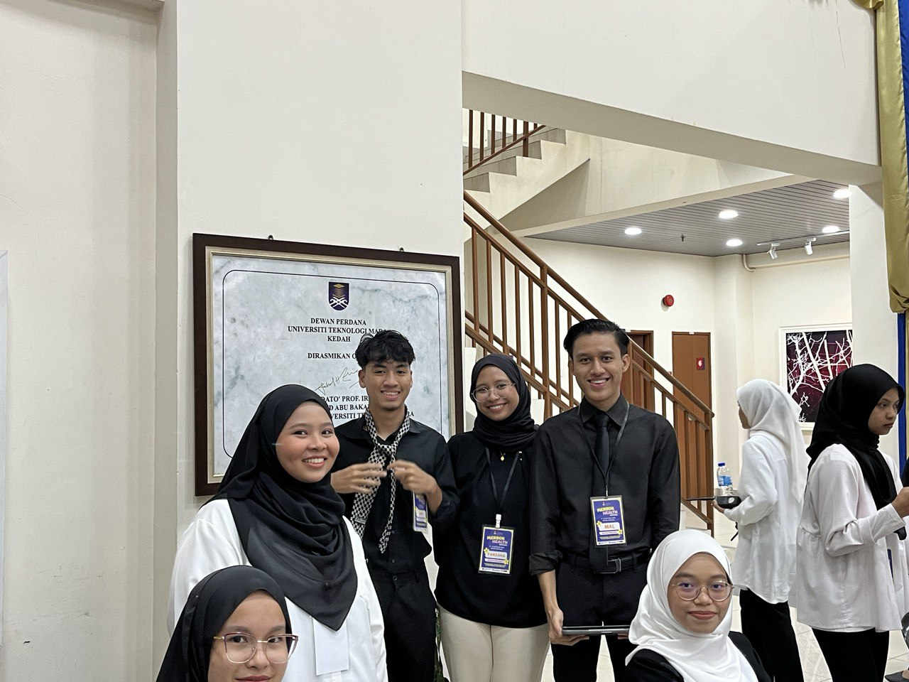
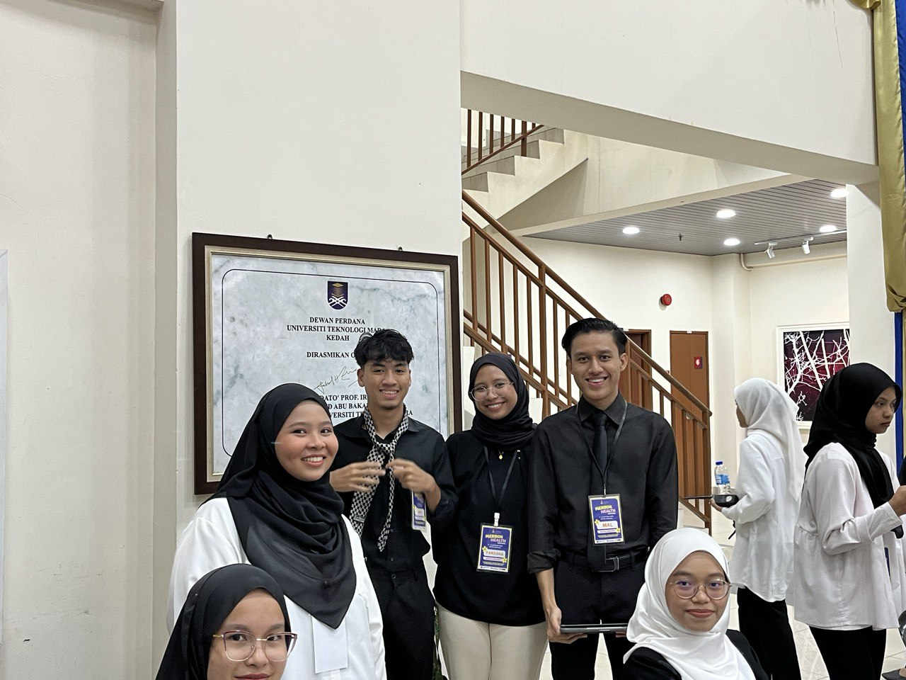

SHORT MEMORIES WITH GOOD EXPERIENCE
The Merbok Health Festival at Dewan Perdana, UiTM Merbok, was a transformative experience for me. As a university student in Malaysia, participating in this event was both enlightening and inspiring. The festival aimed to promote health and wellness among students and the local community, offering a variety of activities and workshops that highlighted the importance of maintaining a healthy lifestyle.
From the moment I arrived, I was struck by the vibrant atmosphere. The event was well-organized, with informative booths set up by various health organizations, offering free health screenings, nutritional advice, and fitness assessments. These resources were invaluable, providing me with personalized insights into my health status and practical tips on how to improve my wellbeing.
One of the highlights of the festival was the series of engaging workshops and talks by health experts. I attended a workshop on stress management, which was particularly relevant given the pressures of academic life. The speaker provided effective techniques for managing stress, such as mindfulness and time management strategies, which I have since incorporated into my daily routine. Another session on balanced nutrition taught me how to make healthier food choices, which has had a positive impact on my energy levels and overall health.
The festival also featured a variety of physical activities, including yoga, aerobics, and a fun run. Participating in these activities was not only enjoyable but also emphasized the importance of staying active. I joined the fun run with my friends, and it was a wonderful bonding experience that underscored the social benefits of exercising together.
Additionally, the Merbok Health Festival fostered a sense of community. It was heartening to see students, faculty, and local residents coming together with a common goal of promoting health and wellness. The event facilitated meaningful interactions and created a supportive environment where everyone felt encouraged to pursue a healthier lifestyle.
In conclusion, joining the Merbok Health Festival at Dewan Perdana, UiTM Merbok, was a profoundly positive experience. It provided me with practical knowledge, motivated me to adopt healthier habits, and reinforced the importance of community in achieving personal wellbeing. This event has left a lasting impression on me, and I am grateful for the opportunity to have been a part of it.